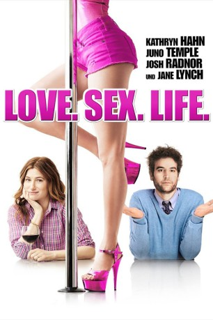

#7522 Love. Sex. Life.
Alternativ: Afternoon Delight
 
 IMDB-Wertung: 5.8 / 10
IMDB-Wertung: 5.8 / 10  Metascore: 0
Metascore: 0 
Rachel ist eine Hausfrau in L.A., die von ihrem Ehe- und Alltagsleben gelangweilt ist. Um mit ihrem Ehemann Jeff wieder Schwung in das gemeinsame Sexleben zu bekommen, veranstalten die beiden einen Ausflug in einen Stripclub, wo Rachel ein paar private erotische Erlebnisse von der jungen blonden Tänzerin McKenna erhält. Rachel ist fasziniert von ihr und will ihr die Chance für einen Neuanfang bieten. McKenna zieht aus ihrem brutalen Haushalt aus und bei Rachel ein - ohne dass Rachel dies mit Jeff vorher geklärt hätte. Doch McKenna übernimmt nicht wie erhofft ein paar Hausarbeiten, sondern verkauft weiterhin ihren Körper an einige Stammkunden. Die Situation eskaliert, als McKenna Rachel dazu einlädt, sie mit zu einem ihrer Klienten zu begleiten...
Jahr: 2013
Dauer: 97 Minuten
FSK: 16
Land: USA Studio: The Film ArcadeTonspuren: DTS - ,
Untertitel:
Auflösung: 1080p (1920x1040) Größe: 4485 MB
Genre: Drama, Komödie
Regisseur: Roberto San Sebastián
Drehbuch: Jill Soloway
Soundtrack:
Darsteller:
 Kathryn Hahn als Rachel
Kathryn Hahn als Rachel- Link Ruiz als Car Wash Attendant 1
 Jane Lynch als Dr. Lenore
Jane Lynch als Dr. Lenore Michaela Watkins als Jennie
Michaela Watkins als Jennie Jessica St. Clair als Stephanie
Jessica St. Clair als Stephanie- Sawyer Ever als Logan
- Josh Radnor als Jeff
 Keegan-Michael Key als Bo
Keegan-Michael Key als Bo Juno Temple als McKenna
Juno Temple als McKenna Suzy Nakamura als Meredith
Suzy Nakamura als Meredith- Ozioma Akagha als Barista
- Bryan Lugo als Tow Truck Driver
 Eugene Cordero als Bobby
Eugene Cordero als Bobby Annie Mumolo als Amanda
Annie Mumolo als Amanda Josh Stamberg als Matt
Josh Stamberg als Matt- Noah Harpster als Craig
 John Kapelos als Jack
John Kapelos als Jack Marshall Manesh als Taxi Driver
Marshall Manesh als Taxi Driver- Mariela I'V als Woman of Sam's Hofbrau
- Marie Gibeault als Woman of Sam's Hofbrau
- Noah Kaye Bentley als Mason , uncredited
- Brooksley Bishop als School Child Mom , uncredited
- Elaine Kratofil als Mom / Teacher , uncredited
- Paul Schoemehl als Coffee Truck Guy , uncredited
- Tyler Schweer als Caleb , uncredited
- Robin Thede als Elana , uncredited
- Cesar Garcia als Car Wash Attendant 2
- Makenna Cotton als Ella
- Javier Calderon als Doorman
- Alex Mauga als Kai
- Tucker als Bonnet the Dog
- The Baroness als Herself
- Joanne Basile als Woman of Sam's Hofbrau
- Inga Bespalovaite als Woman of Sam's Hofbrau
- Julie Bolene als Woman of Sam's Hofbrau
- Nicole Erin Brock als Woman of Sam's Hofbrau
- Antonia Crane als Woman of Sam's Hofbrau
- Lauren Kaplow als Woman of Sam's Hofbrau
- Rie Katagiri als Woman of Sam's Hofbrau
- Violet Lake als Woman of Sam's Hofbrau
- Luz Pazos als Woman of Sam's Hofbrau
- Uzuiri Simms als Woman of Sam's Hofbrau
- Anne Giovanni als Mom at JC Center , uncredited
- Christine Heideman als Playground Mom , uncredited
- Nate Hubinger als Dad , uncredited
- William Mulligan als Teacher , uncredited
- Mona Park als JCC kid , uncredited
- Kaidin Michael Stein als School Child , uncredited
- Dawn Stillings als School Child Mom , uncredited
- Shae Vianzon als Room Mom , uncredited
Datei: X:\2013(I-M)\Love. Sex. Life. (2013, FSK16, 1920x1040).mkv seit 15.11.2017
Festplatte: HD 2013(I-Z)-2014(A-Z)
 Es gibt insgesamt 89 Filme in der Gruppe '2013(I-M)'
Es gibt insgesamt 89 Filme in der Gruppe '2013(I-M)'